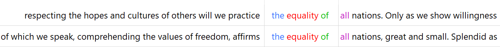
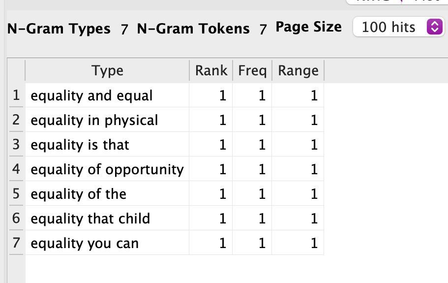
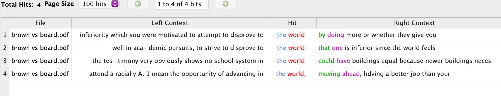
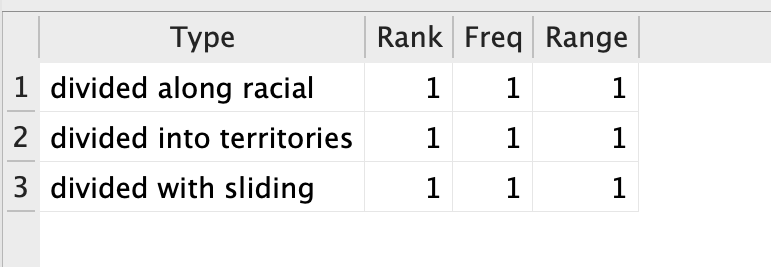
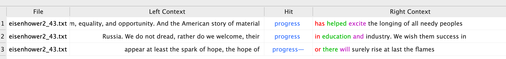

For this assignment, I really wanted to do something with courtroom transcripts. As
there are hundreds of thousands readily available online to the public. I wanted to use
a case that was highly publicized. I also wanted the case to have relevance to me. I
landed on Brown versus the Board of Education. I decided to compare Eisenhower’s second
inaugural speech to the Brown vs Education case. The supreme court ruled for segregation
in schools to be stripped away. Then I became curious, about how presidents or one
president reacts to these things. During the Brown vs Board, Eisenhower was president.
After checking, his first inaugural address which was in 1953, I realized that he might
not have seen the point in mentioning the segregation in our school systems, as the law
hadn’t changed. The law was changed when he was already in his first term of presidency.
In 1957 after the law was changed 1954, he might have felt the need to endorse
desegregation. Beyond just mentioning current happenings, I wanted to see if he appeared
to be in favor of the law. If the language, he used was in support of the new laws. Was
he arguing against or for the progress? In these text analyses, we will see the
connections if any between Eisenhower’s second inaugural address and Brown vs The Board
of education court case. I used voyant tools and antConc to narrow down several keys
words. To narrow down my search to find connections.
Length of Eisenhower's second inaugrial speech! (Antconc
view) Length of the Brown v Board court transcript! (AntConc view)
Here are the voyant views for the most popular words used in
Eisenhower's second ignural speech and the court case brown vs board. (Brown vs
Board) Here are the voyant views for the most popular words used in
Eisenhower's second ignural speech and the court case brown vs board.
(Eisenhower)

Antconc view of the Eisenhower's mention of equality. I wanted to see if
what his views on equality where, and if he mentioned the somewhat new law that
desegregated schools

Surface knowledge on Brown v Board tells us that this case is all about
equality. Specially equality in regards to schooling. It would have been
shocking not to find mentions of equality. After dividing the frequency of the
ngram by the total number of tokens, 0.00017The world was changing at such a fast pace. I wanted to see how
different the world view would be.(Antconc)

Years prior to Eisenhower's second inaugural address. The newly placed
law of desegregation was being enacted in schools. So, for this, I wanted to see
if he even mentioned this progress. In antconc, I searched for the words
education and educational. Only the results were that of education. Just one
where he says the progress is welcomed, in education and other industries.
(Eisenhower) This is the biggest connection. Eisenhower is acknowledging the
progress since his first presidental election. Part of this progress is Brown v
Board.He never comes right out to say it, but he seems to use the word progress
a lot.(Eisenhower) In the 1950s, even with the passing of laws desegragating areas. Racism
was still thriving. I wanted to see how Eisenhower mentioned Brown v Board, to
try and deny the racism that was still occuring.The general idea of Eisenhower's
thoughts on the divide, coincide with the views of Brown v Brown in wanting
everyone to be equal. (Eisenhower)

I wanted see how a courtcase such as Brown v Board, speak on the
divide. With this idea in mind I wanted to see if Eisenhower mentioned a divide
in the world. (Brown)

Progression. Progression is the main point of the Brown vs board. So, I
searched the n-gram of progress. Did he make mentions of spefic progress, by
name? For example the Brown v Board court case. After checking antConc for the
word progression occurring in brown v board I was shocked to the words
progression and progress had not been mentioned. (Eisenhower)
Conclusion
There were so many possible connections I hypothesized. For example, the
words equality and opportunity. I thought these two would appear in both text. However, they
only appeared in Eisenhower's speech. Both times, in the text above, I felt like he was
hinting at Brown v Board. Just not addressing it by name. Referring to our progress, by
mentioning opportunity and equality.